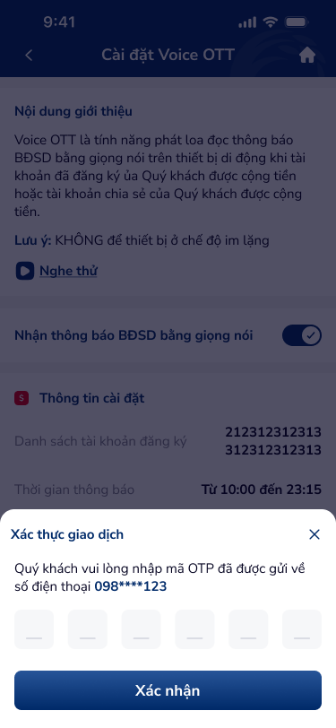

🔎 03 · Các vấn đề được phát hiện
🔴 Nghiêm trọng — Cần xử lý ngay
UXP-001
OTP flow thiếu countdown timer và resend button
Critical
| Hiện trạng | OTP flow (artboard 7103) thiếu countdown timer và resend button — vi phạm DDL otp-input-1 spec. Only 6 cells visible, no feedback. |
| Tác động | Huỷ Voice OTT = account-level action. Failed OTP → can't cancel service → stuck paying. Timer + resend = bắt buộc. |
| Nguyên tắc vi phạm |
|
| Đề xuất |
|
UXP-002
Nội dung popup prerequisite (7100) có lỗi copy — câu lặp và thiếu rõ ràng
Critical
| Hiện trạng | Popup prerequisite (artboard 7100) — câu lặp phrase 'đăng ký nhận thông báo' và nội dung thiếu rõ ràng. Copy error on prerequisite dialog. |
| Tác động | Repeated phrase in popup = sloppy copywriting. người dùng confused: 'What do I need to do first?' Prerequisite must be crystal clear. |
| Nguyên tắc vi phạm |
|
| Đề xuất |
|
🟡 Quan trọng — Ưu tiên cao
UXP-003
CTA label "Đăng ký" sai ngữ cảnh khi màn hình là chỉnh sửa
Major
| Hiện trạng | CTA label 'Đăng ký' trên artboard 7105 — nhưng context là chỉnh sửa/huỷ, không phải đăng ký mới. Label mismatch. |
| Tác động | 'Đăng ký' khi người dùng muốn huỷ = severe confusion. người dùng hesitates: 'Am I registering something new instead of cancelling?' |
| Nguyên tắc vi phạm |
|
| Đề xuất |
|
UXP-004
Time-picker fields thiếu error state và placeholder
Major| Hiện trạng | Time-picker fields 'Từ'/'Đến' (artboard 7105) — no trạng thái lỗi for invalid range, no placeholder hint for format. |
| Tác động | Empty time fields without placeholder → người dùng guesses format. Invalid range → no inline error → server reject. |
| Nguyên tắc vi phạm |
|
| Đề xuất |
|
UXP-005
Destructive action (huỷ dịch vụ) thiếu visual distinction — "Đồng ý" không có...
Major
| Hiện trạng | Destructive action 'Đồng ý' (huỷ dịch vụ, artboard 7102) dùng blue button — giống nhau as non-destructive CTAs. No visual distinction. |
| Tác động | Blue 'Đồng ý' on cancel-service dialog = no urgency signal. Destructive action should use red/warning color or at minimum secondary styling. |
| Nguyên tắc vi phạm |
|
| Đề xuất |
|
⚪ Cải thiện — Nâng cao trải nghiệm
UXP-006
"Nghe thử" thiếu play state indicator
Minor
| Hiện trạng | 'Nghe thử' (artboard 7101) — chỉ static play_circle icon, không có play state indicator (playing animation, pause state). |
| Tác động | người dùng taps play → no phản hồi trực quan → 'Is it playing? Should I tap again?' No progress indicator. |
| Nguyên tắc vi phạm |
|
| Đề xuất |
|
UXP-007
Intro box "Nội dung giới thiệu" lặp lại trên cả 2 màn hình
Minor| Hiện trạng | Intro box 'Nội dung giới thiệu' lặp lại trên cả 2 màn hình (7101 + 7105) — redundant content on form screen. |
| Tác động | Full intro text on form screen = wasted space. người dùng already read intro on previous screen. Form screen should be action-focused. |
| Nguyên tắc vi phạm |
|
| Đề xuất |
|
UXP-008
Empty account section thiếu visual guidance
Minor| Hiện trạng | Empty account section (artboard 7105) chỉ có '+Thêm tài khoản' — thiếu visual guidance khi no accounts added yet. |
| Tác động | Empty area with just a link = uninviting. Should hiển thị guidance: 'Chưa có tài khoản nào. Thêm tài khoản để bắt đầu.' |
| Nguyên tắc vi phạm |
|
| Đề xuất |
|